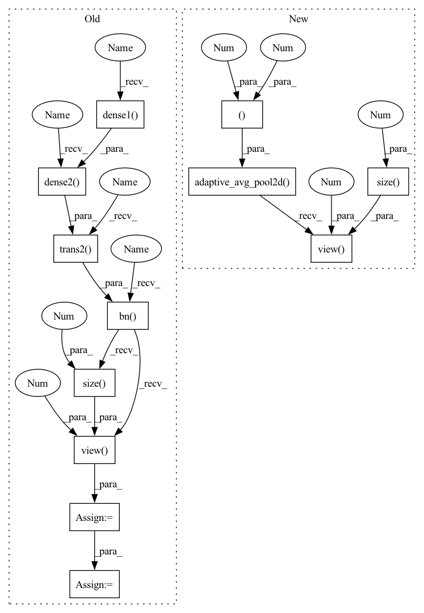

Pattern ID :2576
Before Change
def forward(self, x):
x = self.conv1(x)
x = self.trans1(self.dense1( x) )
x = self.trans2(self.dense2( x) )
x = self.dense3(x)
x = self.bn( x)
x = self.relu(x)
x = self.avgpool(x)
x = x.view(x.size(0 ) , -1 )
x = self.fc(x)
return x
After Change
def forward(self, x):
features = self.features(x)
out = F.relu(features, inplace=True)
out = F.adaptive_avg_pool2d(out, (1, 1)).view(features.size(0 ) , -1 )
out = self.classifier(out)
return out
In pattern: SUPERPATTERN
Frequency: 3
Non-data size: 12
Instances Fragment ID: 10693632
Project Name: lehduong/knowledge-distillation-by-replacing-cheap-conv
Commit Name: f05e7e65999bb02f17d96d1d894bca8e9d0e9785
Time: 2020-03-13
Author: 1612372@hcmut.edu.vn
File Name: models/cifar_models/densenet.py
M Class Name: DenseNet
N Class Name: DenseNet
M Method Name: forward(2)
N Method Name: forward(2)
M Parent Class: nn.Module
N Parent Class: nn.Module
M File Name: models/cifar_models/densenet.py
N File Name: models/cifar_models/densenet.py
M Start Line: 130
M End Line: 142
N Start Line: 114
N End Line: 118
Before Change
def forward(self, x):
x = self.conv1(x)
x = self.trans1(self.dense1( x) )
x = self.trans2(self.dense2( x) )
x = self.dense3(x)
x = self.bn( x)
x = self.relu(x)
x = self.avgpool(x)
x = x.view(x.size(0 ) , -1 )
x = self.fc(x)
return x
After Change
def forward(self, x):
features = self.features(x)
out = F.relu(features, inplace=True)
out = F.adaptive_avg_pool2d(out, (1, 1)).view(features.size(0 ) , -1 )
out = self.classifier(out)
return out
Fragment ID: 10693639
Project Name: lehduong/knowledge-distillation-by-replacing-cheap-conv
Commit Name: f05e7e65999bb02f17d96d1d894bca8e9d0e9785
Time: 2020-03-13
Author: 1612372@hcmut.edu.vn
File Name: models/cifar_models/densenet.py
M Class Name: DenseNet
N Class Name: DenseNet
M Method Name: forward(2)
N Method Name: forward(2)
M Parent Class: nn.Module
N Parent Class: nn.Module
M File Name: models/cifar_models/densenet.py
N File Name: models/cifar_models/densenet.py
M Start Line: 130
M End Line: 142
N Start Line: 114
N End Line: 118
Before Change
def forward(self, x):
x = self.conv1(x)
x = self.trans1(self.dense1( x) )
x = self.trans2(self.dense2( x) )
x = self.trans3(self.dense3(x))
x = self.dense4(x)
x = func.avg_pool2d(func.relu(self.bn( x) ), 4)
x = x.view(x.size(0 ) , -1 )
x = self.linear(x)
return x
After Change
def forward(self, x):
features = self.features(x)
out = F.relu(features, inplace=True)
out = F.adaptive_avg_pool2d(out, (1, 1)).view(features.size(0 ) , -1 )
out = self.classifier(out)
return out
Fragment ID: 10693655
Project Name: saareliad/ftpipe
Commit Name: c7629820d24ed37ac363a721c7d9972d65d78d21
Time: 2019-06-01
Author: alondej@gmail.com
File Name: models/DenseNet.py
M Class Name: DenseNet
N Class Name: DenseNet
M Method Name: forward(2)
N Method Name: forward(2)
M Parent Class: nn.Module
N Parent Class: nn.Module
M File Name: models/DenseNet.py
N File Name: models/DenseNet.py
M Start Line: 77
M End Line: 85
N Start Line: 118
N End Line: 122
Before Change
def forward(self, x, last=False):
out = self.conv1(x)
out = self.trans1(self.dense1( out) )
out = self.trans2(self.dense2( out) )
out = self.trans3(self.dense3(out))
out = self.dense4(out)
out = F.avg_pool2d(F.relu(self.bn( out) ), 4)
e = out.view(out.size(0 ) , -1 )
out = self.linear(e)
if last:
return out, e
else:After Change
def forward(self, x, last=False):
features = self.features(x)
out = F.relu(features, inplace=True)
e = F.adaptive_avg_pool2d(out, (1, 1)).view(features.size(0 ) , -1 )
out = self.classifier(e)
if last:
return out, e
else: Fragment ID: 10693658
Project Name: decile-team/cords
Commit Name: ae5e8164f94b601adbdb79c9b5b33028b27135b2
Time: 2021-01-20
Author: dheerajnbhat@gmail.com
File Name: cords/utils/models/densenet.py
M Class Name: DenseNet
N Class Name: DenseNet
M Method Name: forward(3)
N Method Name: forward(3)
M Parent Class: nn.Module
N Parent Class: nn.Module
M File Name: cords/utils/models/densenet.py
N File Name: cords/utils/models/densenet.py
M Start Line: 81
M End Line: 88
N Start Line: 114
N End Line: 117